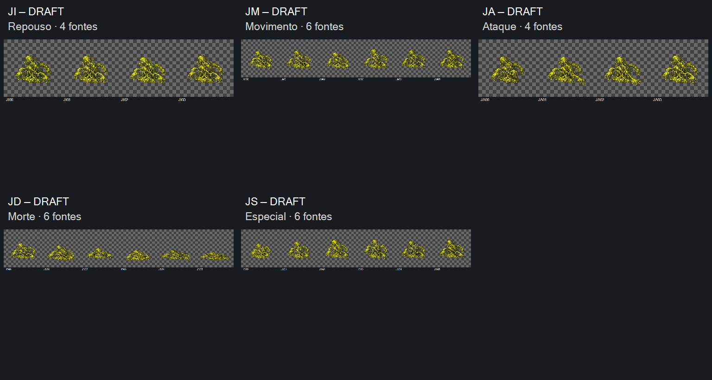

Aceite das 26 revisões selecionadas — preparação e implementação com Claude.
DRAFT para revisão visual conjunta: repouso (4), movimento (6), ataque (4), morte (6), especial (6). Identidade de referência MJ01/v03 já aceita; estes movimentos foram aceitos visualmente em 2026-10-17. JI00/v02 e demais fontes/v01. 27 tentativas preservadas; implementação com Claude.
Players mostram o canvas integral 1254×1254. Nenhum alinhamento ou limpeza ocultos. Repouso/movimento repetem; demais seguram o último quadro. 8 FPS é velocidade de inspeção, sem definir temporização no jogo. Use pausa, arraste o quadro e compare retornos; avalie identidade, clareza da ação e continuidade.
Preparação pendente: alfa de núcleo predominantemente 252–253 e resíduos de baixa opacidade; registro e escala entre poses. Base do contorno varia 9/26/39/70/27 px, incluindo deformações e filamentos. JD04/JD05 têm margens de 10,0%/11,6%, abaixo do alvo 12%. Sem corte na banda externa de 4 px. Esses proxies não certificam pivô, fluidez ou admissão técnica.
A morte reduz a altura do núcleo de 536 para 266 px e termina inerte; o especial é apenas pulso corporal, sem definir habilidade. Preparar pivô semântico antes de usar: especialmente JD01→JD02→JD03, onde a base varia. Conferir loop de movimento e contração/retorno do especial em reprodução.
Entrega para Claude · Manifesto · Medidas · Prompts JI/JM/JA/JD · Prompts JS · Referências · Origens · Controles offline · Integridade

Produção concluída em 2026-10-17. Controles verificados por simulação DOM offline; render de navegador e fluidez não certificados. Aceite visual registrado em 2026-10-17; DRAFT com retenções técnicas. Nenhuma integração, promoção CANON ou playtest incluídos.